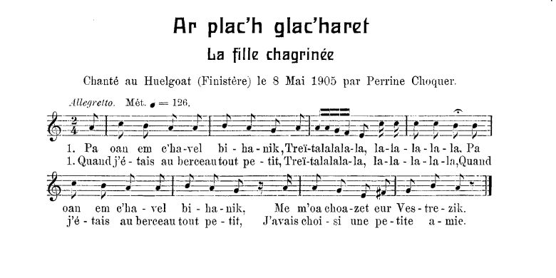

Table des chants de Guillerm
Melezourioù arc'hant ("Les miroirs d'argent" du Barzhaz Breizh)


|
Ar plac'h yaouank glac'haret 1. Pa oan em c'havel bihanik, Treï-talalala-la, la-la - la- la- la, Pa oan em c'havel bihanik M'em-boa choazet ur vestrezig. 2. M'em-boa choazet eur vestrez koant Hep ober deï he c'homplimant; 3. Honnezh a zave beure-mat Evit lakaat he c'hoef ervad. 4. Setu ma lare he mamm de'i: - Setu ma merc'h ker koant ha me! 5. - Petra ta d'in-me bezañ koant, Pegwir ne c'hellan ka'out ma c'hoant? 6. - Tavit, ma merc'h, na ouelit ket! 'Barzh a-benn bloaz c'hwi 'vo dimeet. 7. Nag a-benn bloaz me 'vo marv Dime'et neuze nep a garo. 8. Pa vin marv hag interet, Lakait va bez kreiz ar vered: 9. Lakait varnañ peder fleurenn, Div a vo ruz, div a vo gwenn: 10. 'Vit ma lavaro 'r baotred yaouank, Amañ 'zo inter't ur plac'h koant, 11. A zo marv gant an "Envie" C'hoazh a rayo meur a hini. |
La Jeune Fille chagrinée 1. Enfant au berceau, tout petit, Treï-talalala-la, la-la - la- la- la, Enfant au berceau, tout petit, De mon amie j'étais l'ami. 2. Une gentille amie, pardi - D'avances jamais ne lui fis - 3. Qui se levait de bon matin Pour que sa coiffe tombe bien 4. Sa mère un beau jour déclara - Vous voila plus belle que moi! 5. - Etre belle, mais à quoi bon, Si ce n'est pour plaire aux garçons? 6. - Ma fille, il ne faut pas pleurer: Dans un an je vous marierai. 7. - Je serai morte d'ici là Et se mariera qui voudra! 8. Je serai morte; Qu'on m' enterre En plein milieu du cimetière, 9. Sur ma tombe quatre bouquets: Deux rouges, deux blancs, s'il vous plait 10. Les garçons diront attristés: - Ci-git une jeune beauté 11. Morte de n'avoir point d'époux. Comme bien d'autres, savez-vous? - Traduction: Christian Souchon (c) 2023 |
The Lamenting Girl 1. In my cradle, as a baby Treï-talalala-la, la-la - la- la- la, In my cradle, as a baby I was betrothed already 2. I had chosen a nice sweetheart - To woo her never did I start - 3. One day the girl got up early To trim her headdress carefully 4. Her mother said unconsciously - Daughter, you look better than me! 5. - What's the use of being so pretty, As long as I do not marry? 6. - No use to worry, not a bit: In a year we will see to it. 7. - I'll be dead by then most surely Marry then who wants to marry! 8. I'll be dead; Let me be buried In the churchyard right in the mid , 9. Upon my grave lay four posies: Two red and two white, if you please 10. And young men will say bitterly: - Here's the grave of a young beauty 11. Who died of her vain endeavour To wed. Like her how many more? - |
|
Il existe d'autres chansons sur le même thème - chez Guillerm: . Même titre: version Troboas (1), . Même titre: version Laz (2), - dans les manuscripts de Penguern: La mort du clerc - dans le Barzhaz Breizh: "Les Miroirs d'argent".etc. Il s'agit d'un chant très répandu, repéré sous le n° M-1029 dans la classification de Patrick Malrieu, qui en énumère pas moins de 41 versions et 59 occurrences. En général, le désir de mariage de la jeune beauté est désincarné, ou, si l'âme soeur existe, comme dans le cas présent, elle ne s'est pas fait connaître. |
Lots of other songs with the same topic are found - in Guillerm's collection: . Same title: Troboaz version (1), . Same title: Laz version (2), - in the Penguern MSs: The dead clerk in the Barzhaz Breizh: "The silver mirrors", etc. It is a very widespread song, entered under item M-1029 in Patrick Malrieu's classification, which lists no less than 41 versions and 59 occurrences of it. In general, the young beauty's desire for marriage is "disembodied", or, if the soul mate does exist, as in the present case, it has not made itself known. |